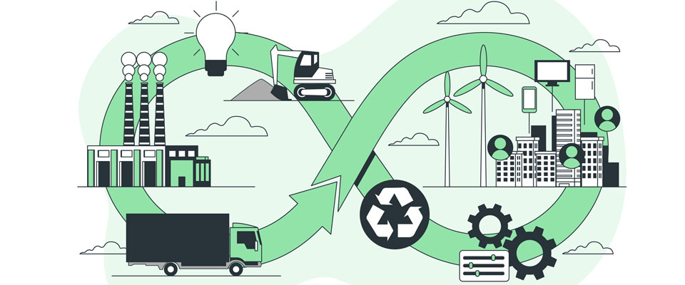

Diseño
El diseño de los sensores ClimaBarrio prioriza la sostenibilidad y la durabilidad. Cada sensor es compacto, con componentes de bajo consumo energético y materiales reciclables. Se planifica la ubicación en barrios y zonas rurales para maximizar la cobertura con el menor número de unidades.
Desarrollo
Durante la fase de desarrollo se ensamblan los sensores, se programan con software de recopilación de datos y se prueban localmente. El desarrollo modular permite reemplazar componentes sin desechar todo el dispositivo.
Uso
Los sensores recopilan datos ambientales en tiempo real: temperatura, humedad, calidad del aire y ruido. Estos datos se suben automáticamente a la plataforma de ClimaBarrio para que ciudadanos y administraciones puedan visualizarlos.
Mantenimiento
El mantenimiento es mínimo: limpieza periódica del sensor y comprobación de conexión a la red. En caso de fallo de un componente, este se reemplaza fácilmente sin tener que desechar el sensor completo.
Fin de Vida / Reutilización
Al final de su ciclo, los sensores ClimaBarrio se desmontan y los materiales se reciclan. Componentes electrónicos y plásticos son separados para su reutilización o reciclaje, cumpliendo criterios de economía circular.
